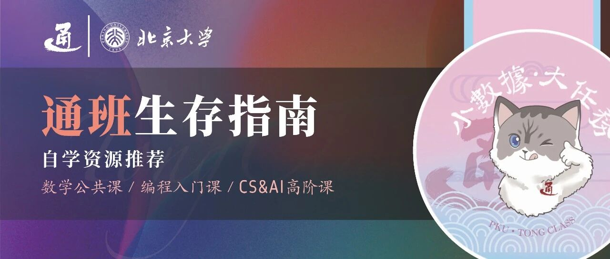

通班生存指南 | 自学资源推荐


请滑动翻阅来自通班的信～
💡
也许喜欢自学的人会特别感受到自学的魅力。你可以按自己任意节奏学，不用和其他人竞争比较，一切正反馈是自己给予自己的。天地间只有你一人，和面前的书本，时间仿佛凝结在永恒的此刻。
01
数学公共课自学
对于像笔者一样不是数学天才的普通人，对数学知识的吸收难易很大程度依赖于教材的难度。太难的教材如天书，瞪着一页看半天也不能理解。我对于每一门数学课通常会下载许多不同出版社的教材，按照个人能力和考试题型有针对性学习。
高等数学A/数学分析
个人亲测的高数/数分教材难易排序如下：
同济大学高等数学 + 习题全解指导（高等教育出版社，绿色封面）
高等数学解题指南（北京大学出版社，蓝色封面）
谢彦桐助教讲义[1]
（获取链接的方式在文末～）
高等数学（北京大学出版社，红色封面）
高等数学精选习题解析（北京大学出版社，红色封面）
数学分析中的典型问题与方法（裴礼文，高等教育出版社）
数学分析习题课讲义（谢慧民，高等教育出版社）
线性代数A/高等代数
不知道为什么笔者可能是1%的喜欢丘砖的人。事实上这是我最喜欢的一本数学书。兼具吸收度和深度，内容详实充分，由浅入深，生动有趣，第n道题一定能只用到第n-1及之前的知识做出来。而且教考合一，把丘砖的题都做一遍，考试题型完全一致，保证90+。所以在这里我只推荐一本。
剩下99%推荐的是Gilbert Strang老师，美国教材风格，和丘砖风格迥异，看你喜欢哪个。
推荐：（无难度排序）
高等代数 + 学习指导书（丘维声，清华大学出版社）以及视频课程[2]
高等代数第四版（王萼芳、石生明，高等教育出版社）
Linear Algebra (Gilbert Strang)[3]（清华大学出版社也有印刷）以及视频课程[4]
概率统计A/概率论+数理统计
亲测难易排序：
概率论与数理统计（盛骤等，高等教育出版社，蓝色封面）：习题为生活化应用计算题
概率论与数理统计教程（茆诗松等，高等教育出版社）：和概统A考试题型一致
概率论基础 + 学习指导书（李贤平等，高等教育出版社）：证明题居多，难度大
食用方法：随便选一本，当觉得太难或太易，就随着排序链条上下游走。当然更欢迎大家尝试新的书，推荐给笔者，毕竟自己亲手探索到的好东西，正反馈和学习意愿是最强的。
02
编程入门课的自学
相信以各位的学习能力，知识和概念都不难掌握，编程入门课最难的是期中期末的算法题上机考试，这也是最需要自学的部分。
洛谷[5]：面向中小学信息竞赛选手，好玩游戏背景的出题风格类似上机，但oier都太聪明，高赞解析往往变量名取法abcdefg，许多超纲技巧，没有文字解释。
力扣[6]：面向成年就业求职者，常见题目有官方清晰解析，方便上手。
代码随想录[7]：回溯和动态规划讲得全网最清晰深入浅出的，卡哥画的图把这两个算法刻在我大脑中。其他章节也基本涵盖了所有上机考试和求职面试的知识点，每个知识点由易到难排了很多题练手，每道题有详细讲解。适合成体系成系统的训练。
菜鸟教程[8]和编程狮[9]：程设/软设学习C++面向对象时用于翻看对应知识点的讲解。之后学习其他语言也很方便。
（获取链接的方式在文末～）
03
CS&AI高阶课的自学
网络上时不时存在课程框架设计、作业/lab/project代码质量、考核方式等各方面都精心打造的课程。对于学有余力的同学，是一个很好的开拓视野、增长能力的机会。
你可以系统性从头到尾学习一门完整的课，好处是循序渐进、思路连贯，能看见自己一步一步的学习进度，能充分享受高质量课程的良好体验；
也可以作为主修课业之余的调剂，在繁重任务的压力下、在对写代码丧失兴趣时，找一些正反馈及时的project写一写；
也可以是从零了解科研领域，如用cs231n入门计算机视觉；
也可以是上课老师讲太快听不懂时找对应知识点的课件学。
如AI引论前半学期讲到不同的搜索方法，可以找CS 188[10]包含课件、教材、讨论班、作业、代码等多种资源联合学习；
图形学只讲授一课时，内容很繁多，可以找games 101[11]对应知识点的5-6个课时，由浅入深地透彻理解；
机器人学也只讲一课时，可以读MIT Russ Tedrake的Robotic Manipulation[12]教材；
这种带着问题的针对性学习往往效率最高。
0.传承衣钵
首先是传承学长们的衣钵~
仲殷旻学长：CSDIY：CS自学指南[13]
游震邦学长：计算机系统推荐清单
overleaf[14]：更新更及时
GitHub[15]
虽然大家培养方案几乎只需要学习AI的课程，但AI科研中也不免有许多时候与操作系统、计算机网络等打交道，对计算机系统有更深入的理解有助于突破AI的硬件瓶颈。
然后是按个人兴趣自由发掘探索！
1.培养方案
Google搜索“学校名称”+“专业名称”+curriculum\ requirement\ courses\ "lower/upper division"。
例如 Berkeley 的 CS Major Lower Division Degree Requirements[16] 和 CS Major Upper Division Degree Requirements[17] 和研究生课程 CS Graduate and Special Topics Courses[18]，而 CS Courses[19] 则详尽列出所有CS系所有课程。
搜索”course map”可以得到好看的先修关系树[20]。
一个小小的避免搞混的note是，Berkeley有CS和EECS两个独立的系，分别开在文理学院和工程学院，因此在查询课程时不仅可以找CS开头的课程，EECS也有机会发现到好课。
2.课程
查询培养方案/核心专业课之后，Google搜索相应课号，如CS 61A[21]，查询课程大纲。如果非常幸运该课程全部开源，可以找到其课程网站获取课件、作业、lab和project、历年往年题等等。
3.DATA/EE
学有余力的朋友不仅应当关注CS/AI，还可以尤其关注Data和EE专业。
Data 8: The Foundations of Data Science[22]和Data 100. Principles and Techniques of Data Science[23]是两门入门课，学完后更进阶的是DATA 101. Data Engineering[24]，Data 102. Data, Inference, and Decisions[25]和DATA 144. Data Mining and Analytics[26]。更多课程参考培养方案[27]。
EE专业首先强烈推荐EE 120: Signals and Systems[28]，从数学推导到project的精彩有趣都极为能打。边缘检测、股票预测、由图片测量心率、从零由信号生成多轨音频... 最后一个是我印象最深刻的，当我敲着敲着代码，信号函数突然从我手下传入耳朵，《Mr. Brightside》《Viva La Vida》《Bohemian Rhapsody》这些我一直喜欢的摇滚歌，那一刻简直像魔法一样，是我学习计算机专业以来最美好的瞬间之一。
4.跨学科
作为一名元培学生，如果你有跨学科兴趣，好奇计算机和人工智能技能如何可以运用于你感兴趣的其他学科，Berkeley data science专业令人亮眼的是对于每一个可能应用数据科学的细分领域，有专门domain-specific[29]的课程列表。有金融分析、应用数学、计算生物学、心理学、数字艺术、教育学、语言学、社会科学、哲学、机器人、法学等多达30个细分领域。
04
尾声
感谢大家耐心看到这里，笔者深受网络开源书籍和课程的滋养，个人认为好的书和课就像伟大的作品一样，读完深深震撼，荡气回肠，久久不能平复，随即感慨自己的幸运和渺小。
不要畏惧课程太难，只要满足课程的先修要求，相信自己作为北大学生的数学能力和学习能力，去尽情享受这些用心设计的精良作品。
祝愿大家都能享受自学的魅力，体验写代码的快乐，不后悔自己选择了通班！如果有学习心得，欢迎来找我交流~
参考资料
谢彦桐助教讲义: https://darkoxie.github.io/
视频课程: https://www.bilibili.com/video/BV1jR4y1M78W/?spm_id_from=333.337.search-card.all.click
Linear Algebra (Gilbert Strang): https://rksmvv.ac.in/wp-content/uploads/2021/04/Gilbert_Strang_Linear_Algebra_and_Its_Applicatio_230928_225121.pdf
视频课程: https://www.youtube.com/playlist?list=PL49CF3715CB9EF31D
洛谷: https://www.luogu.com.cn/
力扣: https://leetcode.cn/
代码随想录: https://programmercarl.com/
菜鸟教程: https://www.runoob.com/
编程狮: https://m.w3cschool.cn/tutorial
CS 188: https://inst.eecs.berkeley.edu/~cs188/
games 101: https://sites-cs-ucsb-edu.translate.goog/~lingqi/teaching/games101.html?_x_tr_sl=zh-CN&_x_tr_tl=en&_x_tr_hl=en&_x_tr_pto=sc
Robotic Manipulation: https://manipulation.csail.mit.edu/
CS自学指南: http://csdiy.wiki/
overleaf: https://www.overleaf.com/read/txqjnjxyxqqx
GitHub: https://github.com/ZhenbangYou/Computer-Systems-Learning-Resources-A-Recommended-List
CS Major Lower Division Degree Requirements: https://eecs.berkeley.edu/resources/undergrads/cs/degree-reqs-lowerdiv/
CS Major Upper Division Degree Requirements: https://eecs.berkeley.edu/resources/undergrads/cs/degree-reqs-upperdiv/
CS Graduate and Special Topics Courses: https://eecs.berkeley.edu/academics/courses/approved-cs-graduate-and-special-topics-courses/
CS Courses: https://www2.eecs.berkeley.edu/Courses/CS/
先修关系树: https://hkn.eecs.berkeley.edu/courseguides
CS 61A: https://cs61a.org/
Data 8: The Foundations of Data Science: https://data8.org/
Data 100. Principles and Techniques of Data Science: https://ds100.org/
DATA 101. Data Engineering: https://data101.org/
Data 102. Data, Inference, and Decisions: https://data102.org/
DATA 144. Data Mining and Analytics: https://classes.berkeley.edu/content/2024-fall-data-144-001-lec-001
培养方案: https://data.berkeley.edu/academics/data-science-undergraduate-studies/data-science-major/requirements-upper-division
EE 120: Signals and Systems: https://ee120-course-staff.github.io/
domain-specific: https://data.berkeley.edu/degrees/domain-emphasis
05
获得自学资源链接
想要一键获得以上所有参考资源的链接，请关注公众号“PKU通班”，并在后台私信处依次发送“自学资源1”、“自学资源2”，即可获得可直接点击跳转的全部链接！


关于通班：
撰稿 | 倪嘉怡
封面 | 严绍恒
排版 | 陈应涵